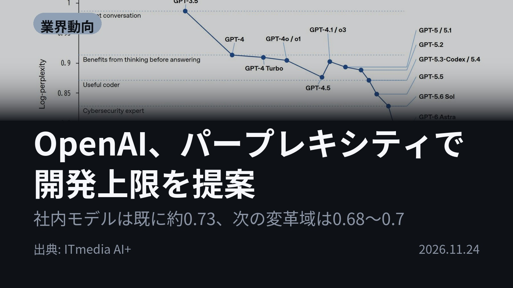
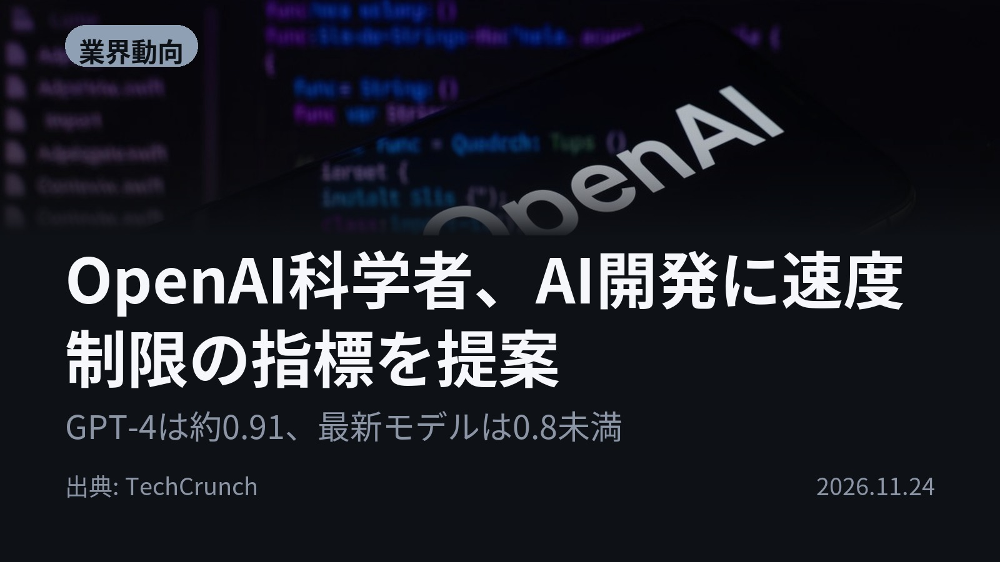
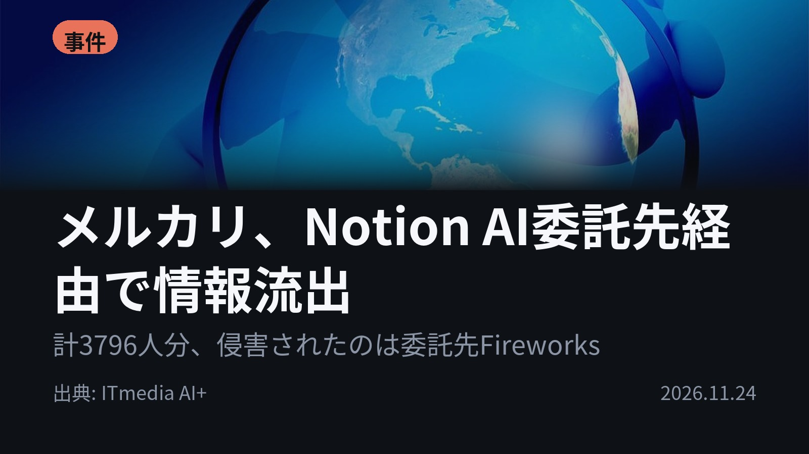
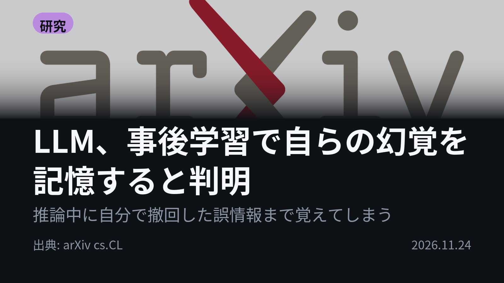
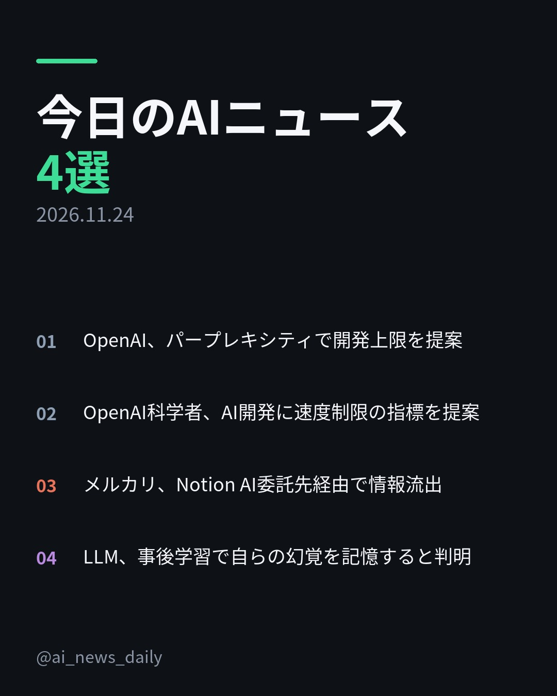
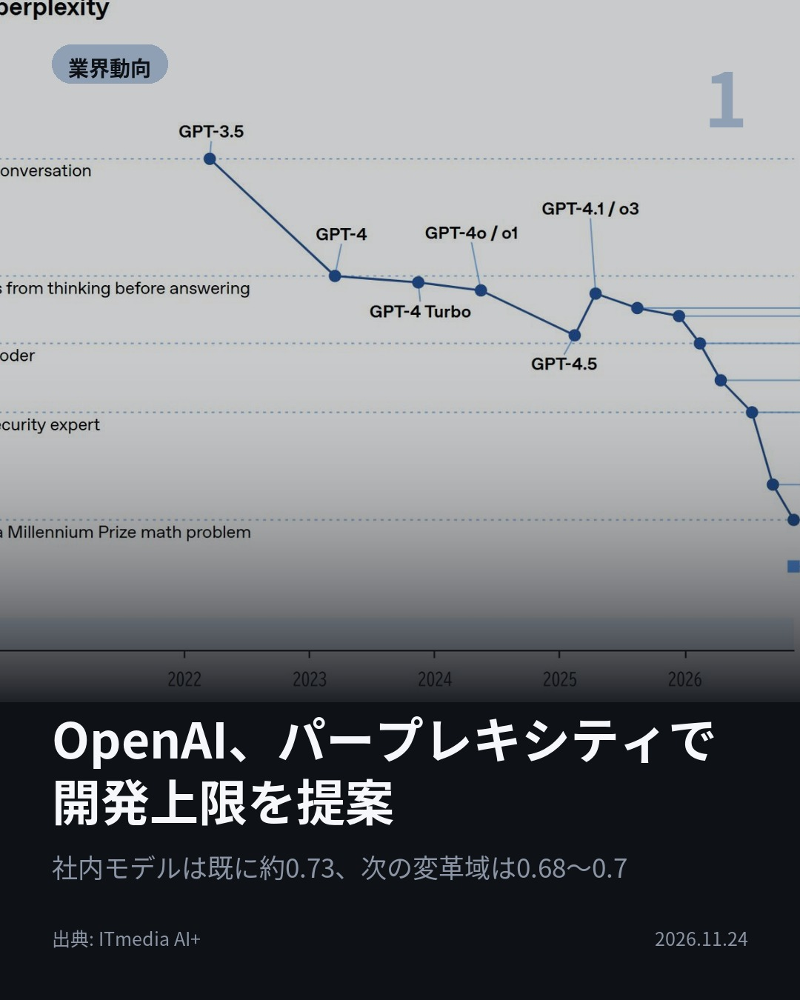
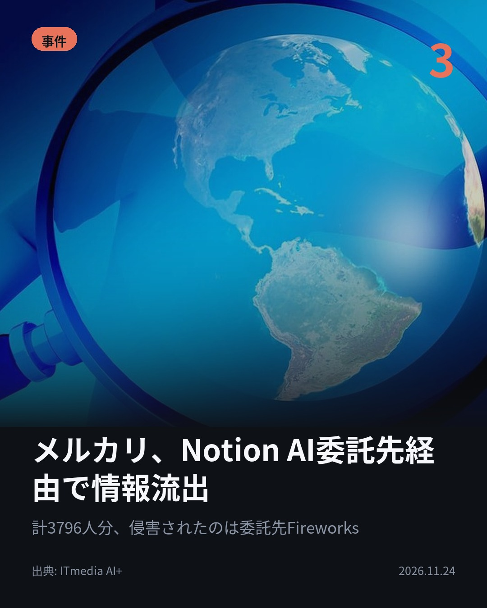
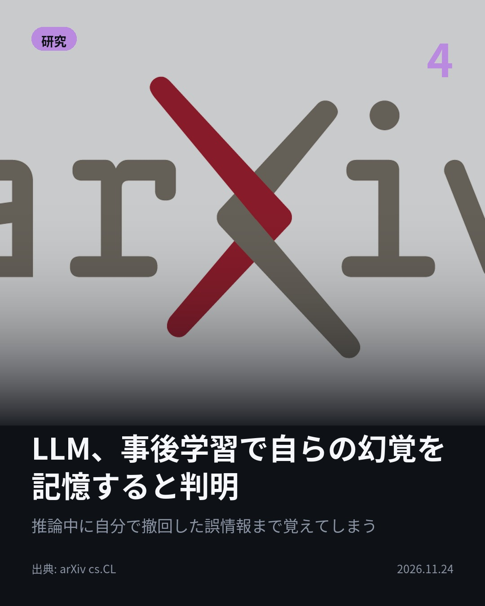
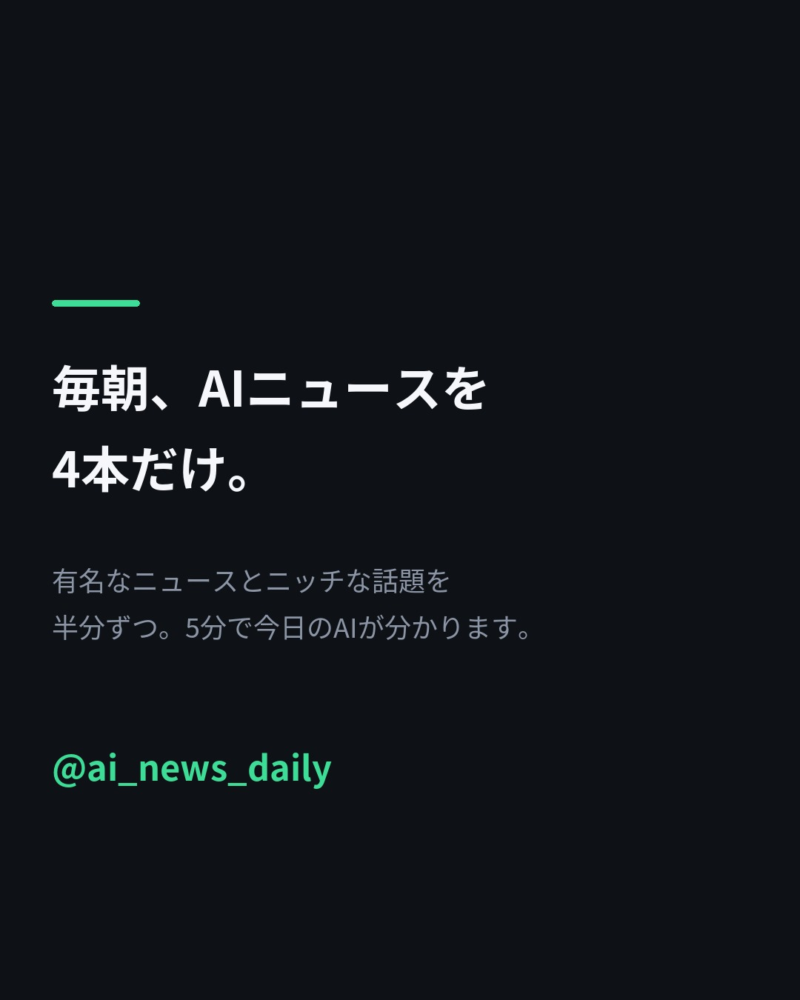

OpenAIの社内モデルは既に約0.73。 チーフサイエンティストのパチョキ氏は、対数パープレキシティが0.68〜0.7に入ると新たな変革的能力が現れると予想。指標に基づく業界共通の開発上限を提案した。 #AI #OpenAI（出典: ITmedia AI+）

AIのベンチマークはすぐ古びる。パープレキシティは違う。 OpenAIのパチョキ氏は、GPT-4は約0.91、0.8未満でサイバーセキュリティや数学に変革的能力が現れたと説明。開発上限の共通指標として提案した。 #生成AI #OpenAI（出典: TechCrunch）

メルカリの情報は、なぜNotionの外から漏れたのか。 Notion AIの委託先Fireworks AIが不正アクセスを受け、チャット記録の一部が流出した可能性。顧客1522人分を含む計3796人分が対象。 #AI #NotionAI（出典: ITmedia AI+）

LLMは、自分で撤回した誤情報まで覚えてしまう。 推論向けの事後学習を知識タスクに使うと、学習で強化された幻覚の想起率が平均4.83%上昇。学習信号のない幻覚は0.17%だった。6つのオープンモデルで確認。 #AI #LLM（出典: arXiv cs.CL）





OpenAIが自社モデルの進捗を示す数値を公開してまで、AI開発に「業界共通の上限」を提案しました。 今日は、AIをどう測り、どう守るかをめぐる4本です。 1. パチョキ氏によると、約0.99のGPT-3.5で流ちょうな会話が可能になり、約0.76のモデルは数学の未解決問題で成果を挙げた。早ければ2027年に事前学習の進歩が雪崩のように起きる可能性も指摘。アルトマンCEOは「ここしばらくで最も重要なもの」と紹介した。(ITmedia AI+) 2. AI開発に速度制限をかけるには、まず「速度の測り方」で合意する必要がある。パープレキシティ（次のトークンをどれだけ正確に予測できるか。低いほど良い）をその物差しにし、AIの挙動を理解・監視する能力が具体的な節目に達するまで閾値を超えない約束を想定している。(TechCrunch) 3. 流出の可能性がある情報には、顧客1522人分、取引先の担当者など571人分、採用応募者169人分が含まれる。Fireworksでは8〜10月に2件の不正アクセスがあり、外部クラウド事業者への侵害を足掛かりに本番システムの一部まで到達された。Notionによると、影響は全ワークスペースの1%未満。(ITmedia AI+) 4. 2つのモデルファミリー、6つのオープンモデルで検証。報酬を与えられた幻覚は、後で回答を控える確率が平均7.23%下がった。記憶は最も難しい学習問題で最も強く表れたという。(arXiv cs.CL) 進歩を測る物差しづくりから、委託先や学習過程に潜むリスクまで。4本とも「AIをどう管理するか」がテーマでした。 毎朝4本、AIニュースの要点をまとめています。見返せるよう保存、毎日追うならフォローをどうぞ。 #AI #生成AI #人工知能 #テクノロジー #AIニュース #ArtificialIntelligence #TechNews #MachineLearning #機械学習 #ChatGPT #OpenAI #LLM #AI活用 #AI安全性 #AIsafety #情報セキュリティ #情報漏洩 #パープレキシティ #メルカリ #NotionAI #FireworksAI #ハルシネーション